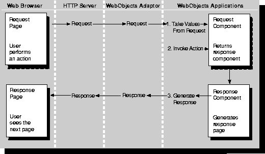

What Is a WebObjects Application?
 Table of Contents
Table of Contents  Previous Section
Previous Section
The WebObjects Application Executable
An application executable is an executable file, provided by you or by WebObjects, that receives incoming requests from the adaptor and responds to them, usually by returning a dynamically generated HTML page.
If your application is written entirely in WebScript, it can use the default application executable, NeXT_ROOT/NextLibrary/Executables/WODefaultApp, provided as part of the WebObjects package. If your application contains compiled code, you build your own executable and use it in place of WODefaultApp.
WebObjects applications are event driven, but instead of responding to mouse and keyboard events, they respond to HTTP requests. A WebObjects application receives a request, responds to it, and then waits for the next request. The application continues to respond to requests until it terminates. During each cycle of this request-response loop, the application extracts the user input from the request, invokes an action if one is associated with the user's action, and generates a response-usually an HTML page (see Figure 8).

Figure 8. The Request-Response Loop